Tu piel, nuestra obra de arte
Tatuajes únicos con estilo, pasión y cuidado. En Soca Tattoo convertimos tus ideas en arte que llevás con vos para siempre.
Reservá tu turnoSobre Nosotros
Conocé nuestro espacio y nuestra pasión por el arte corporal
Un estudio pensado para vos
En Soca Tattoo creamos un espacio donde el arte y la comodidad se encuentran. Nuestro estudio en Vicente López está diseñado para que tu experiencia sea única desde el primer momento.
Cada tatuaje es una pieza personalizada, creada con dedicación, higiene profesional y atención al detalle. Trabajamos con los más altos estándares para que tu arte corporal sea exactamente lo que soñás.
Contactanos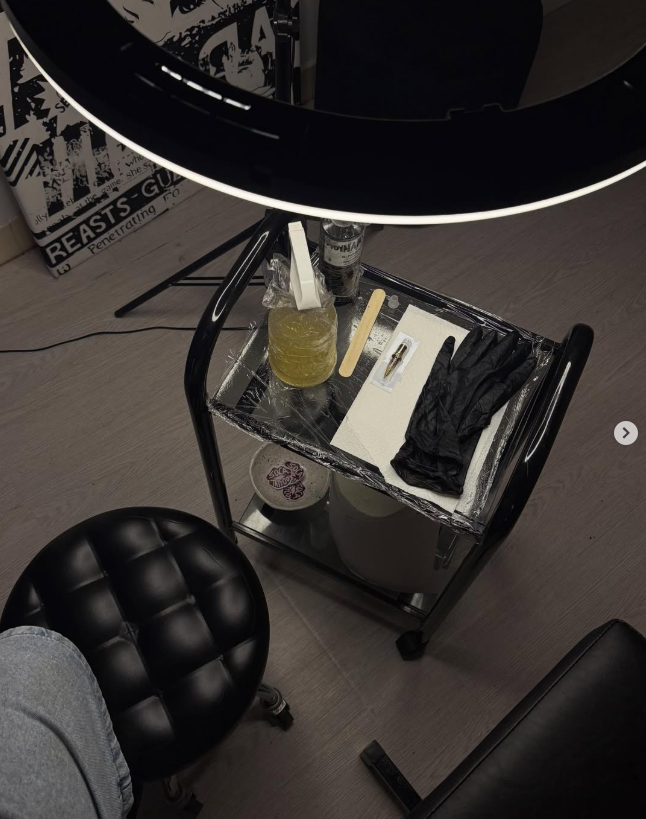
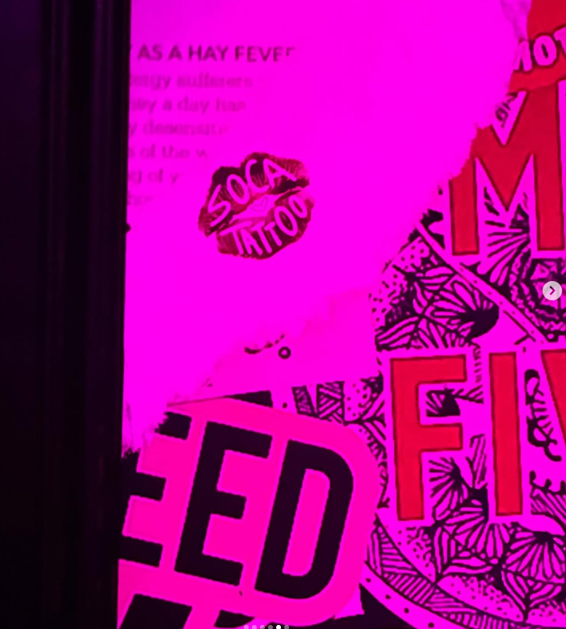
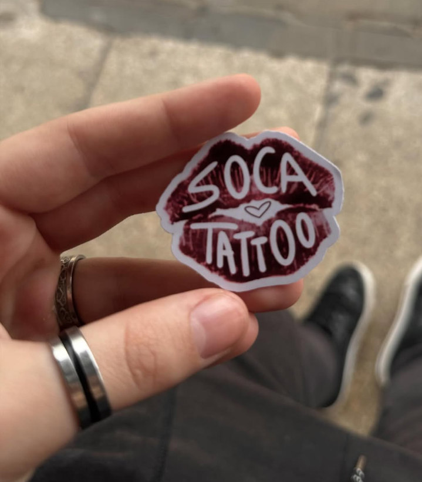
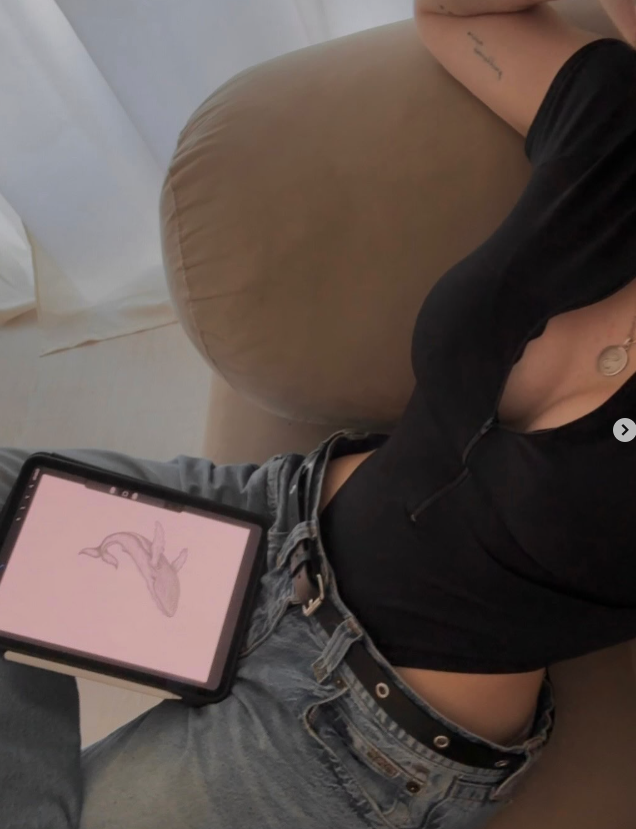
Portfolio
Una selección de nuestros trabajos más recientes
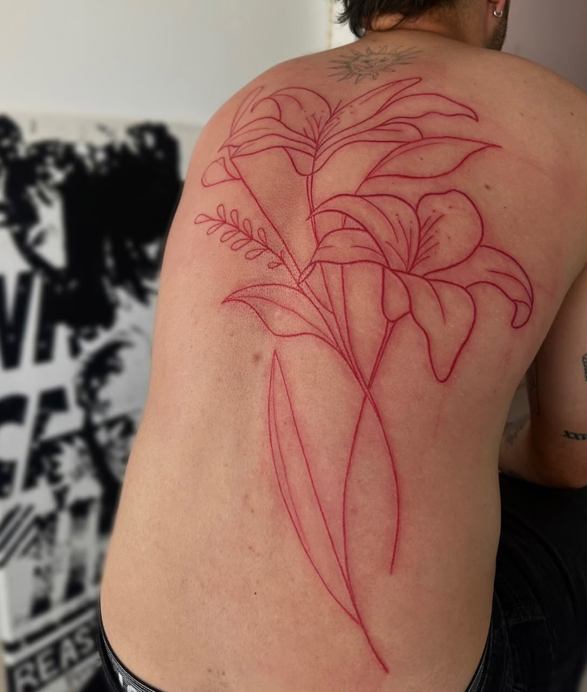
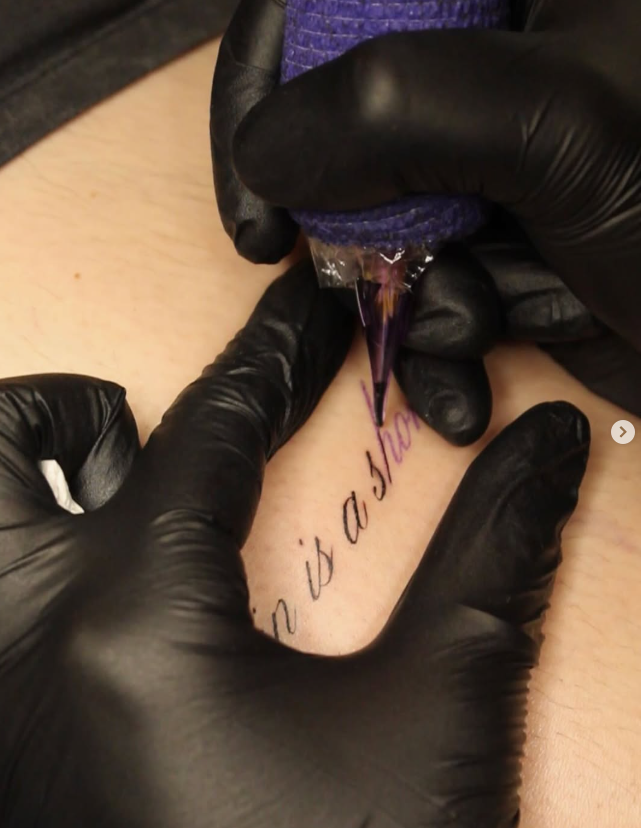
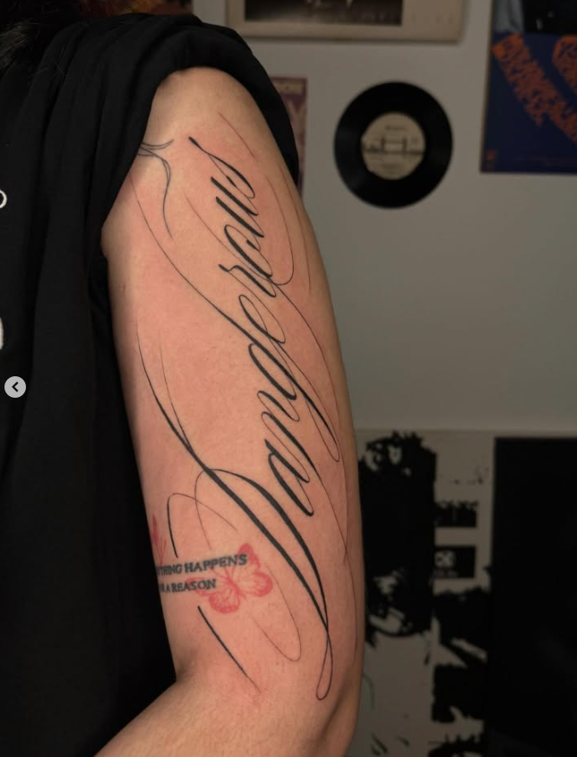
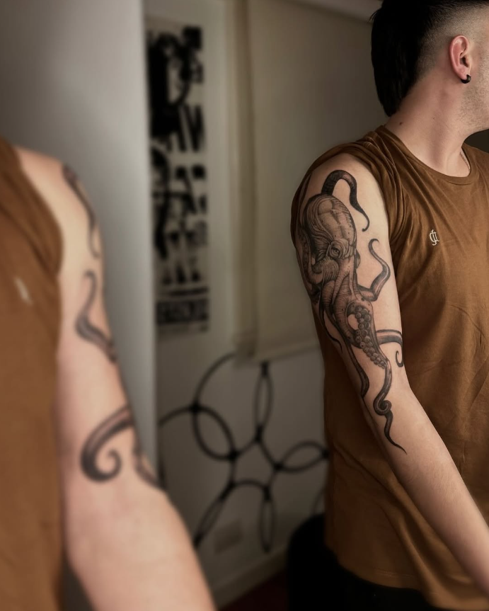
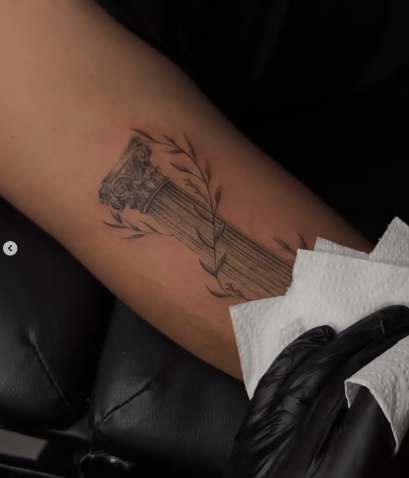
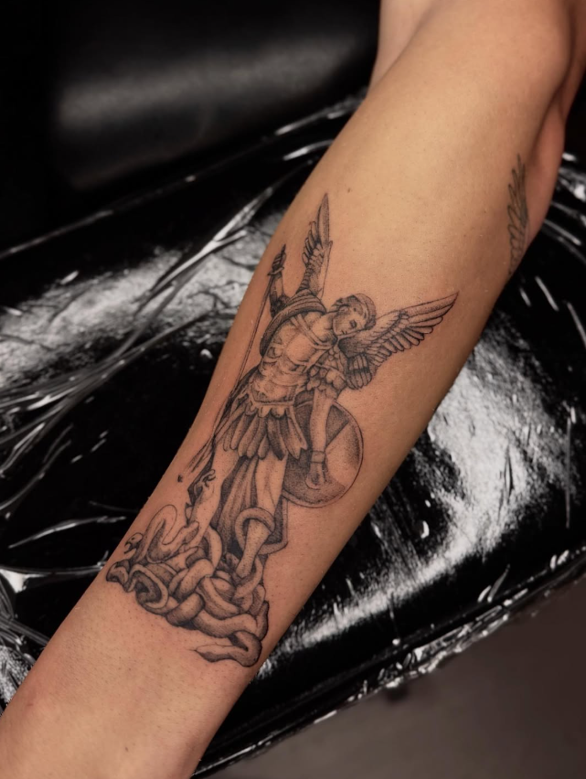
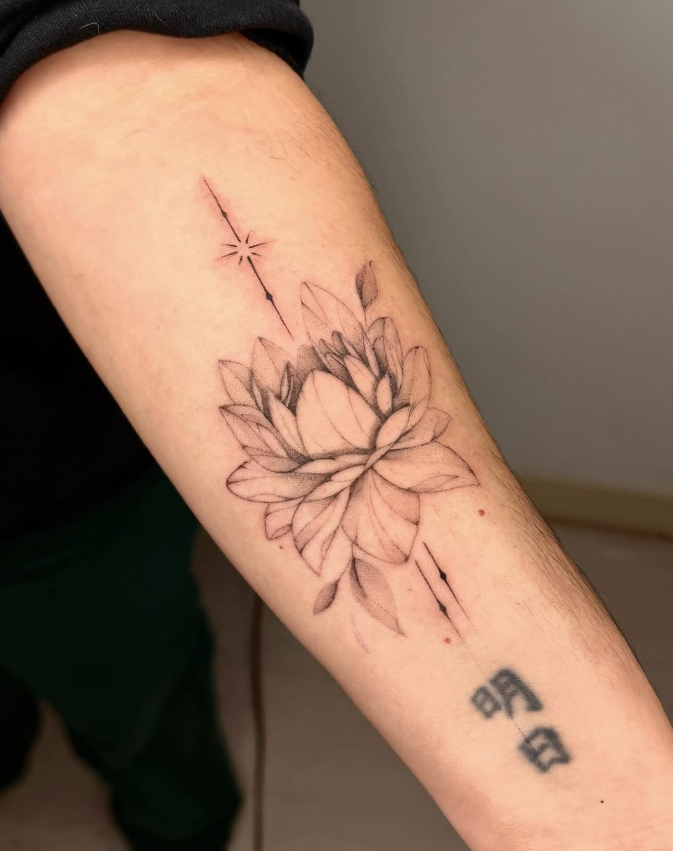
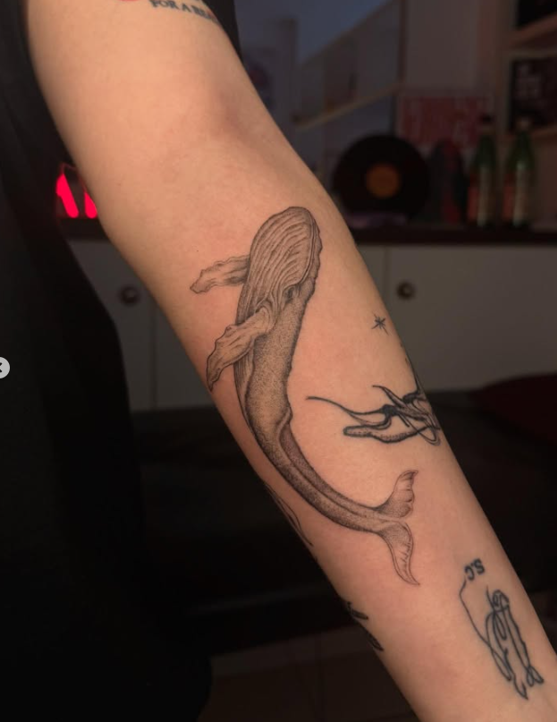
Ubicación
Encontranos en Vicente López, Buenos Aires
Dirección
Gral. José de San Martín 1774, B1602BWP
Vicente López, Provincia de Buenos Aires